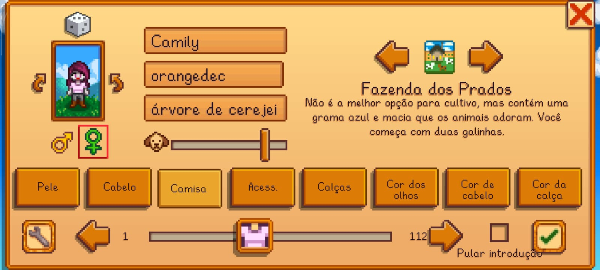
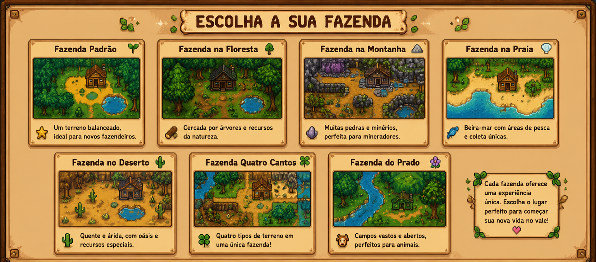
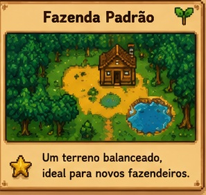
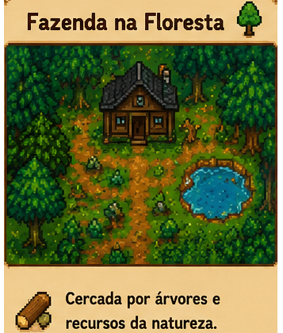
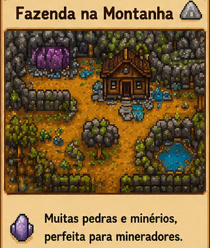
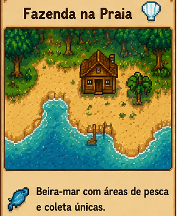
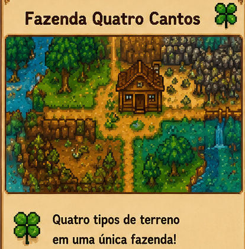
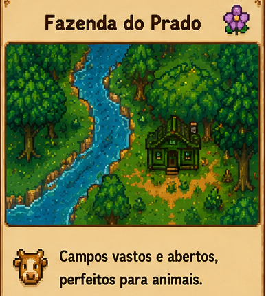

🌿A importância de escolher bem sua fazenda no Stardew Valley🌿
Escolher a fazenda ideal no Stardew Valley é uma decisão muito importante, pois ela influencia diretamente a forma como o jogador irá aproveitar sua jornada no vale. Cada tipo de fazenda possui características únicas, como espaço para plantações, áreas de pesca, recursos naturais, animais e desafios diferentes.
Uma boa escolha permite que o jogador organize melhor seus objetivos, seja focando na agricultura, na criação de animais, na mineração, na pesca ou na exploração. Além disso, a fazenda escolhida pode combinar com o estilo de jogo de cada pessoa, tornando a experiência mais divertida e personalizada.
Por isso, antes de começar sua aventura, é importante conhecer as vantagens e limitações de cada mapa. Assim, o jogador consegue planejar sua fazenda, aproveitar melhor os recursos disponíveis e construir o lugar dos seus sonhos em Stardew Valley.


🌾 Fazenda Padrão
A Fazenda Padrão é a opção mais equilibrada de Stardew Valley e também a mais recomendada para quem está começando a jogar. Ela oferece a maior área livre para plantações, construções e criação de animais, permitindo que o jogador desenvolva sua fazenda sem muitas limitações. Como não possui características especiais, ela é extremamente versátil e se adapta a qualquer estilo de jogo, seja focado em agricultura, pecuária, mineração ou produção de itens artesanais.
Seu grande diferencial é justamente a liberdade. O jogador pode organizar a fazenda da maneira que preferir, criando grandes plantações, áreas para celeiros, galinheiros, viveiros de peixes ou qualquer outro projeto. Essa flexibilidade faz com que muitos jogadores continuem escolhendo esse mapa mesmo depois de adquirirem experiência no jogo.

🌲 Fazenda da Floresta
A Fazenda da Floresta foi criada para jogadores que gostam de explorar a natureza e coletar recursos diariamente. Ela possui diversas árvores, áreas de vegetação e pontos onde surgem itens coletáveis, como frutas silvestres, cogumelos e madeira de lei. Esses recursos tornam a evolução mais fácil nos primeiros dias de jogo e ajudam bastante na fabricação de equipamentos.
Em compensação, o espaço disponível para grandes plantações é menor do que na Fazenda Padrão. Mesmo assim, ela continua oferecendo espaço suficiente para agricultura, principalmente quando o jogador organiza bem o terreno.

⛰️ Fazenda da Colina
A Fazenda da Colina é voltada para quem gosta de mineração. Seu terreno possui elevações, rios e uma pequena área onde aparecem pedras, minérios e geodos que podem ser coletados diariamente. Isso ajuda bastante na obtenção de recursos para fabricar ferramentas e máquinas.
Por causa do relevo irregular, o espaço para plantações acaba sendo mais limitado. Isso exige um pouco mais de planejamento na hora de organizar a fazenda, mas oferece uma experiência bastante diferente dos outros mapas.

🐟 Fazenda da Praia
A Fazenda da Praia é uma das mais bonitas de Stardew Valley. Seu enorme litoral facilita a pesca e proporciona um visual único durante todas as estações do ano. Além disso, caixas com itens especiais podem aparecer na praia, oferecendo recursos extras ao jogador.
Seu principal desafio é que grande parte do terreno não permite o uso de aspersores, tornando a irrigação manual muito mais importante. Por isso, exige mais planejamento e organização do que outros mapas.

🍀 Fazenda Quatro Cantos
A Fazenda Quatro Cantos divide o terreno em quatro áreas principais, cada uma inspirada em um tipo diferente de fazenda. Essa organização facilita muito a separação das atividades, permitindo criar uma área exclusiva para plantações, outra para animais, outra para mineração e outra para produção.
Embora tenha sido criada pensando no modo multiplayer, ela também funciona muito bem para jogadores solo que gostam de manter tudo organizado.
